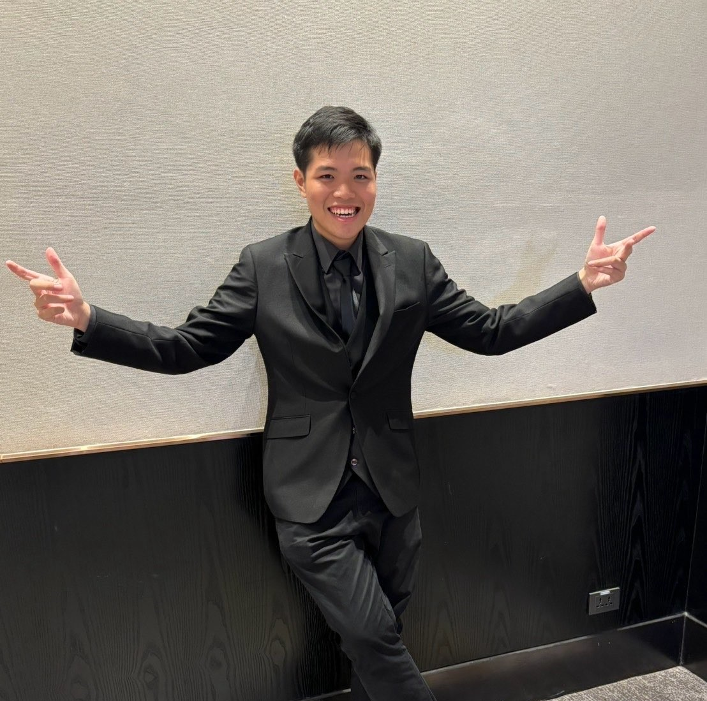
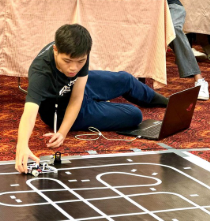
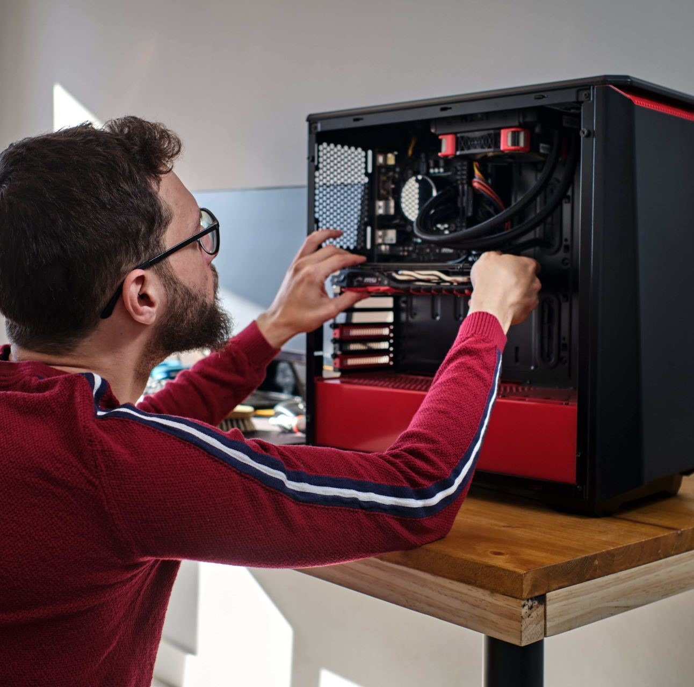

รพีพงศ์ ไร่รุ่ง
สวัสดีครับ ผมชื่อ "โชกุน" แต่ส่วนมากเพื่อนผมจะเรียกง่ายๆว่า "โช" เฉยๆ ปัจจุบันกำลังศึกษาอยู่ในชั้นปริญญาตรี คณะวิศวกรรมศาสตร์ สาขาคอมพิวเตอร์ ชั้นปีที่ 2
ทักษะ

สวัสดีครับ ผมชื่อ "โชกุน" แต่ส่วนมากเพื่อนผมจะเรียกง่ายๆว่า "โช" เฉยๆ ปัจจุบันกำลังศึกษาอยู่ในชั้นปริญญาตรี คณะวิศวกรรมศาสตร์ สาขาคอมพิวเตอร์ ชั้นปีที่ 2

ผมมีประสบการณ์ในการเขียนโปรแกรม C++ CSS Html และ Python รวมถึงเคยร่วมการแข่งขันหุ่นยนต์หลายรายการ บางรายการได้แค่เข้าร่วม แต่บางรายการก็ได้รางวัลครับ

ผมเคยประกอบคอมพิวเตอร์มาก่อนครับ แต่ยังไม่ช่ำชองมาก เพราะไม่ได้ลองหลายๆแบบ และผมเองก็ซ่อมคอมพิวเตอร์ กับโน้ตบุ๊คขั้น Basic พอได้ พอดูอาการว่าเสียที่อะไร แต่ไม่ถึงขั้นบัดกรีแผงวงจรครับ